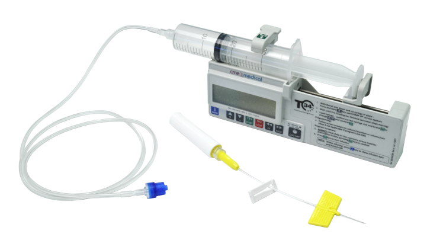
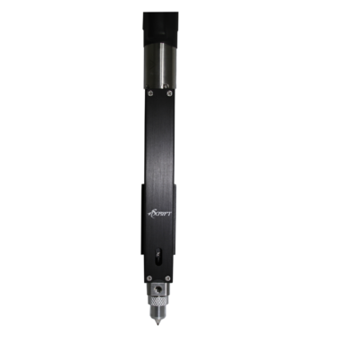
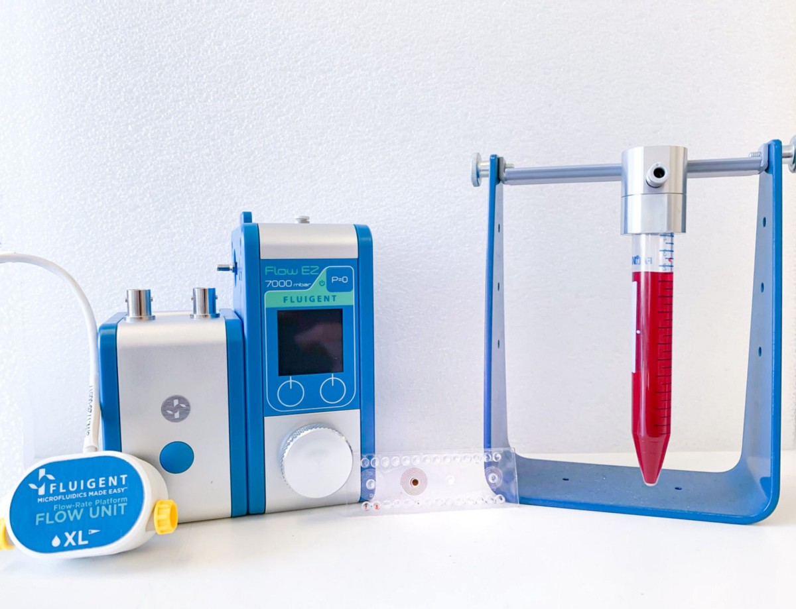
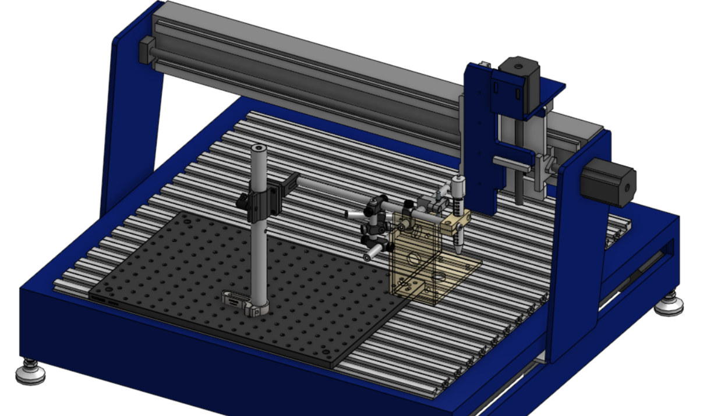
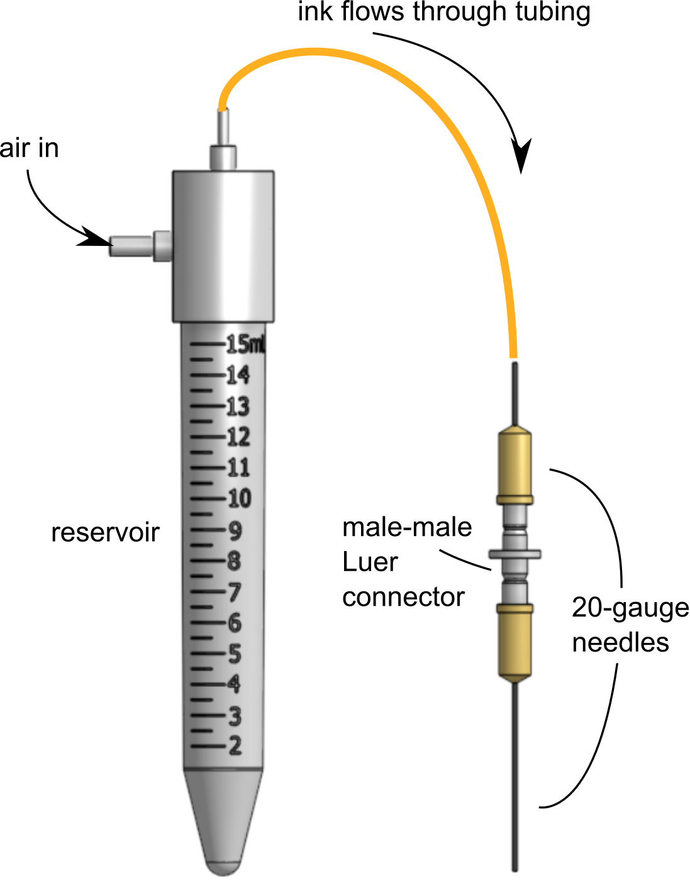
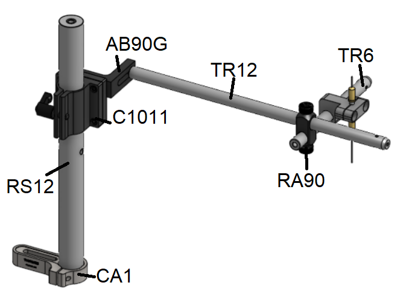
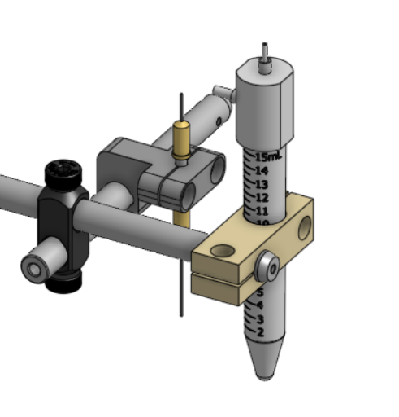
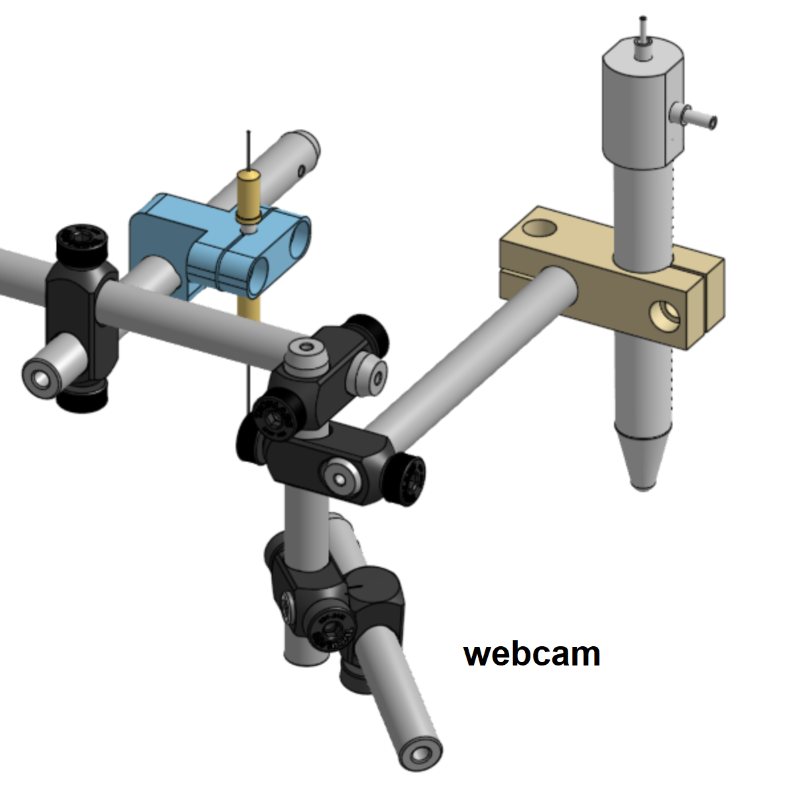
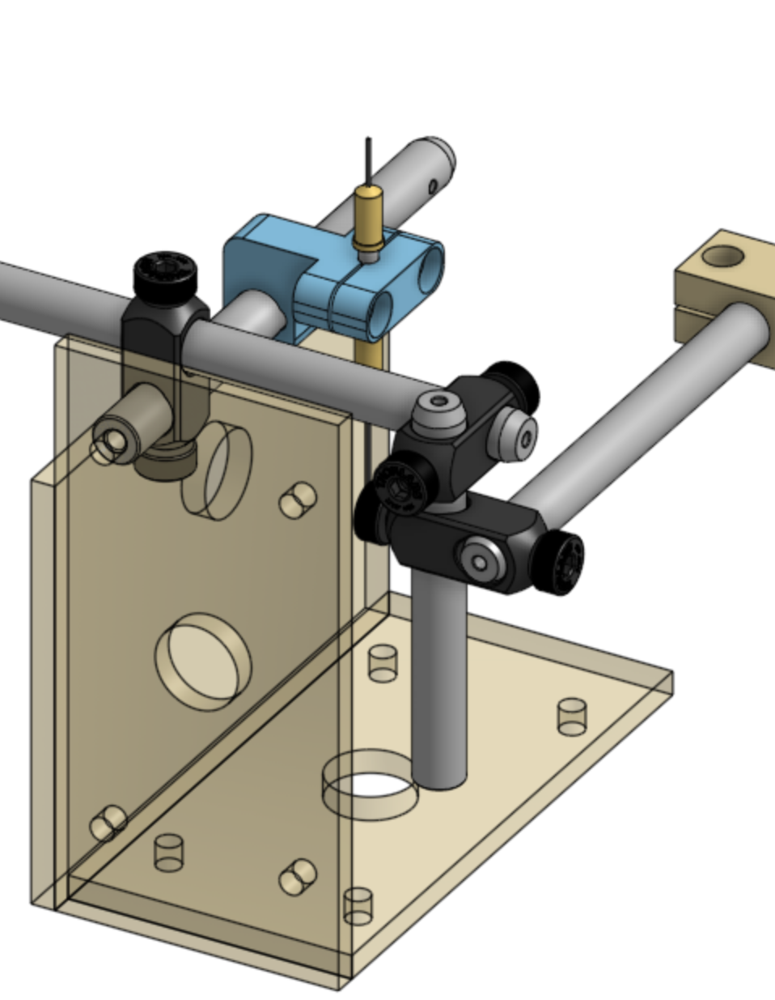
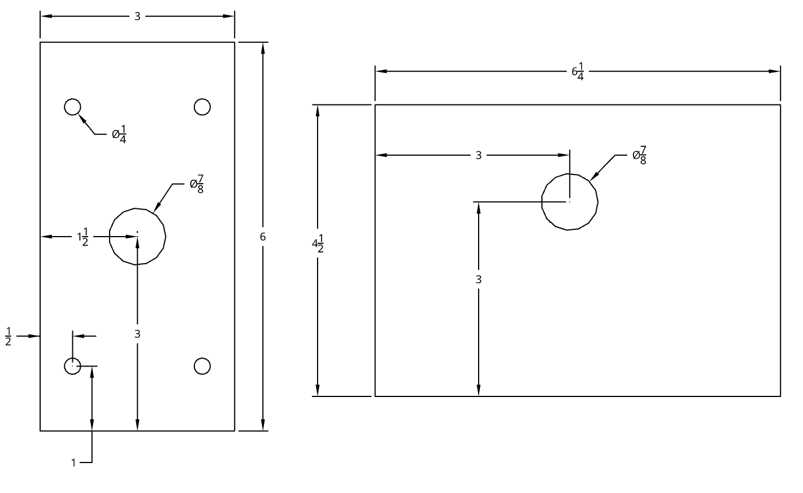

Nozzle assembly
Hardware || Stage assembly || Nozzle assembly || Lighting assembly
Last updated Jan 3, 2022 by Leanne Friedrich
Certain commercial equipment, instruments, or materials are identified in this user guide in order to describe a specific device. Such identification is not intended to imply recommendation or endorsement by the National Institute of Standards and Technology, nor is it intended to imply that the materials or equipment identified are necessarily the best available for the purpose.
The previous installment demonstrated how to mount a stage onto the Shopbot gantry, so that the stage will move, but everything else will stay static. This installment describes how to mount a nozzle onto the Shopbot. This post describes two nozzle designs, one for conventional printing and one for direct ink writing with acoustophoresis. Both use a pneumatic mass flow controller to extrude ink out of a reservoir.
In Direct Ink Writing, there are many types of nozzles you could use. Here are a few:

- A syringe pump, which can control the flow rate of ink out of a syringe, through a tube, through a nozzle. These can control the flow rate directly, but can experience transients that make it difficult to make quick moves.

- Pneumatic direct dispensing pumps, where you fill a reservoir with ink, and a pump applies pressure to the ink, causing it to flow directly out of the reservoir through a nozzle. I have never used one of these systems, so I can't comment on how it is to work with these, but they are advertised as having very fine control over starts and stops, over a wide range of ink viscosities.

- A pneumatic mass flow controller. You fill a reservoir with ink, and a pump applies air at a fixed pressure to the reservoir, causing ink to flow out through a tube, which is connected to a nozzle. This is the design that I have used the most. The disadvantages of these systems are that you have to separately calibrate the flow rate of your ink to the requested pressure instead of just plugging in a flow rate, and they can't extrude very viscous inks. However, mass flow controllers have faster starts and stops than syringe pumps and allow for more flexibility and customization at the nozzle end than direct dispensing pumps. As a result, pneumatic mass flow controllers are useful for research applications, low viscosity inks, and custom 3D printer designs.
Installing a simple nozzle
▼OpenClose
Consumables:

For our conventional nozzle, we use a stainless steel blunt-tipped needle. A long needle is useful for embedded 3D printing, where the needle is submerged into a bath. To connect this needle to the ink tubing coming out of the reservoir, and to help the nozzle mount onto the printer, we include two adapters. First, a male-male Luer connector fits into the base of the long needle. Then, another shorter needle fits onto the male-male Luer connector. This shorter needle can fit inside of the ink tubing, creating a complete path from the reservoir to the tip of the nozzle.

The male-male Luer connector provides a grippable shape that slots into a machined 2-part adapter. By installing and uninstalling 2 screws, the nozzle can be easily replaced when it gets dirty or damaged.

By slotting a post through the hole of the adapter, the nozzle can then be mounted on the base of the Shopbot.

The reservoir holder can be mounted on the post using a 3D printed adapter, or using a clamp from a ring stand.

The posts near the nozzle can also be used to mount a webcam.

Another useful feature is a light shield, mounted between the nozzle and any sensitive optical equipment. The lightshield on the shopbot, as of Jan 5 2022, is made of UV-blocking acrylic, with holes cut between the nozzle and the camera and lighting. The holes are covered with glass cover slips, to protect the optical equipment from any ink sputtering out of the nozzle. The advantage of the UV-blocking acrylic is that it can protect the nozzle and reservoir from the UV lamp on the left side of the printer, preventing the ink from curing prematurely. CAD


Installing a nozzle for acoustic focusing
See Friedrich, L. M. (2020). Tailored composite microstructures via direct ink writing with acoustophoresis.